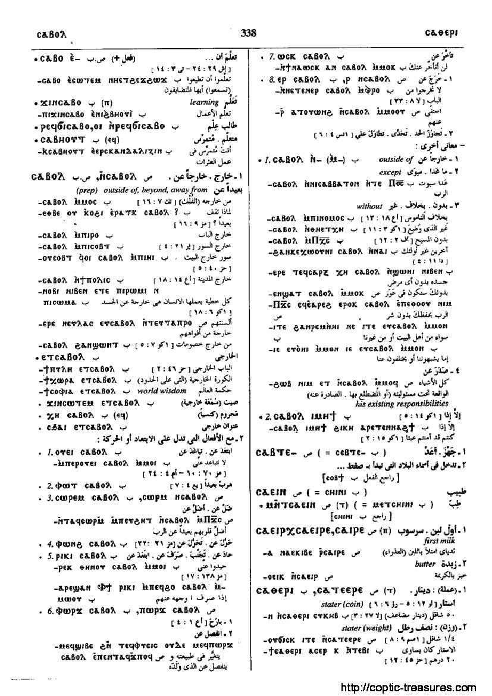

ⲥⲁⲑⲉⲣⲓ (ⲧ)
(
noun female
)
Crum:
366a
stater,
coin & weight
[
στατηρ
,
δραχμη
,
διδραχμον
,
δεναριον
]
1503-1-1
1503-1-2
(S) ⲥⲁⲧⲉⲉⲣⲉ
(sA) ⲥⲧⲁⲧⲉⲉⲣⲉ
(B) ⲥⲁⲑⲉⲣⲓ
366
Dawoud:
338b

338
Home
prev
Key:
1503
next
Contact